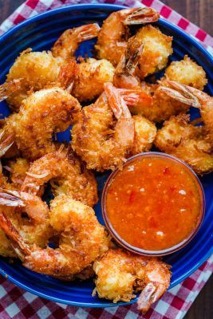

Coconut Shrimp

Sweet and Savory!
Crispy, crunchy shrimp with a twist
Ingredients:
- 1-1/4 cup all-purpose flour
- 1-1/4 cups cornstarch
- 6-1/2 teaspoons baking powder
- 1/2 teaspoon salt
- 1/4 teaspoon Cajun seasoning
- 1-1/2 cups cold water
- 1/2 teaspoon canola oil
- 2-1/2 cups sweetened shredded coconut
- 1 pound uncooked shrimp (26-30 per pound), peeled and deveined
- Additional oil for deep-fat frying
- 1/2 cup orange marmalade
- 2 tablespoons honey
Steps:
- In a large bowl, combine the first 5 ingredients. Stir in water and oil until smooth. Place coconut in another bowl. Dip shrimp into batter, then coat with coconut.
- In an electric skillet or deep-fat fryer, heat oil to 375 degrees. Fry shrimp, a few at a time, for 3 minutes or until golden brown. Drain on paper towels.
- In a small saucepan, heat marmalade and honey; stir until blended. Serve with shrimp.